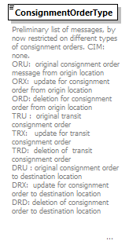

| diagram |  | ||||||||||||||||||||||||||||||||||||||||||||||||
| namespace | http://taf-jsg.info/schemes | ||||||||||||||||||||||||||||||||||||||||||||||||
| type | restriction of xs:token | ||||||||||||||||||||||||||||||||||||||||||||||||
| properties |
|
||||||||||||||||||||||||||||||||||||||||||||||||
| used by |
|
||||||||||||||||||||||||||||||||||||||||||||||||
| facets |
|
||||||||||||||||||||||||||||||||||||||||||||||||
| annotation |
|
||||||||||||||||||||||||||||||||||||||||||||||||
| source | <xs:element name="ConsignmentOrderType"> <xs:annotation> <xs:documentation>Preliminary list of messages, by now restricted on different types of consignment orders. CIM: none. ORU: original consignment order message from origin location ORX: update for consignment order from origin location ORD: deletion for consignment order from origin location TRU : original transit consignment order TRX: update for transit consignment order TRD: deletion of transit consignment order DRU : original consignment order to destination location DRX: update for consignment order to destination location DRD: deletion of consignment order to destination location </xs:documentation> </xs:annotation> <xs:simpleType> <xs:restriction base="xs:token"> <xs:enumeration value="ORU"> <xs:annotation> <xs:documentation>Subset for RU which fetches consignment at origin.</xs:documentation> </xs:annotation> </xs:enumeration> <xs:enumeration value="ORX"> <xs:annotation> <xs:documentation>Update for ORU</xs:documentation> </xs:annotation> </xs:enumeration> <xs:enumeration value="ORD"> <xs:annotation> <xs:documentation>Deletion of ORU</xs:documentation> </xs:annotation> </xs:enumeration> <xs:enumeration value="TRU"> <xs:annotation> <xs:documentation>Subset for transit RU</xs:documentation> </xs:annotation> </xs:enumeration> <xs:enumeration value="TRX"> <xs:annotation> <xs:documentation>Update for TRU</xs:documentation> </xs:annotation> </xs:enumeration> <xs:enumeration value="TRD"> <xs:annotation> <xs:documentation>Deletion of TRU</xs:documentation> </xs:annotation> </xs:enumeration> <xs:enumeration value="DRU"> <xs:annotation> <xs:documentation>Subset for RU which takes consignment to destination</xs:documentation> </xs:annotation> </xs:enumeration> <xs:enumeration value="DRX"> <xs:annotation> <xs:documentation>Update for DRU</xs:documentation> </xs:annotation> </xs:enumeration> <xs:enumeration value="DRD"> <xs:annotation> <xs:documentation>Deletion for DRU</xs:documentation> </xs:annotation> </xs:enumeration> </xs:restriction> </xs:simpleType> </xs:element> |